During the years that Luc & Cassy spent in Texas, Eric saw Luc, Cassy, and Jess saw nearly every weekend. I, however, only joined the group every few months.
So while the friendship was strong, our documentation is a bit spotty. Makes me wish I'd spent more Saturdays hanging with the climbers.
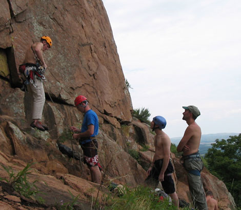
This was from the first day we met Luc in August 2004.

Luc is featured prominently on our "On
the Rock" page,
as that's where you could find Luc, Eric, and Steve Fekete
nearly every weekend in those days.
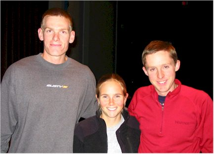
This is a nice picture of him with his Mom, Romel.
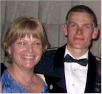
.jpg)
In August of 2005, I joined the gang in the Wichitas for a fun day of being outside.
.jpg)
Also in August of 2005, Eric, Luc, & I took a trip together
to my parents' house in Westville.
The next day the guys left me there while they headed on to Horseshoe Canyon
Ranch for
some climbing. Luc stayed long enough to learn how to cast a
baitcasting rod and totally
charm my parents. They stopped for supplies
in Lincoln, AR and my sister happened to be
driving by and noticed them, so
she got to meet Luc as well. You don't need to be around
Luc for long to
be permanently affected by him.
Luc submitted the lower quote at right to Rock & Ice and they printed
it.
Stuff like that happened to Luc all the time, everyone loved him - even if
they only read his e-mail.
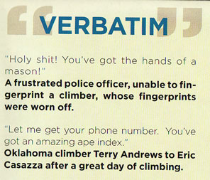

In October 2005, we took a trip to one of our favorite weekend getaways, Horseshoe Canyon Ranch near Jasper, Arkansas. It is beautiful there, and great climbing too. On this trip, Luc and Cassy told us that they had decided to get a dog. We had great fun dreaming up potential names for her - especially things you'd never want to say at the base of a climb like "Fall" or "Rock".
And Jess arrived! Here she is, clinging to Momma.
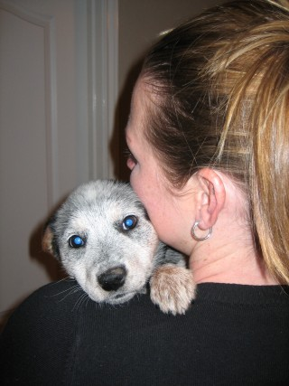
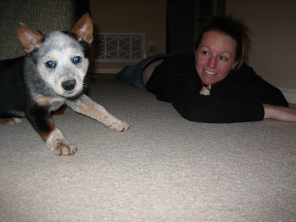
Luc with his patience and that clicker did amazing things with this puppy.
She is honestly one of the smartest and best-behaved dogs in the world.
Just like her Dad & Mom, she is a blessing to everyone who gets to know
her.
The gang went climbing all winter long in the cold, but snow is a
climbing obstacle that just can't be beat. One snowy weekend in
February 2006 Luc & Cassy brought their new puppy Jess
to stay with us so we could get to know the little
sweetie.
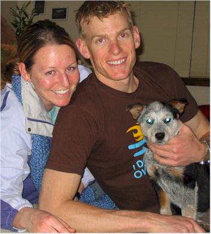
In March of 2006, Luc was kind enough to invite us to their house to help them celebrate Cassy's birthday. I called that weekend, "Spa Gruenther" because of the royal treatment we received. It was a perfect weekend.
.jpg)
| From a note sent to Eric by Luc in April 2006
Eric, --According to my geeky Excel spreadsheet, we've led
82 routes at Horseshoe. My #1 goal for the next trip is to break 100 leads, so
there will be none of this "loose leash" crap.
|
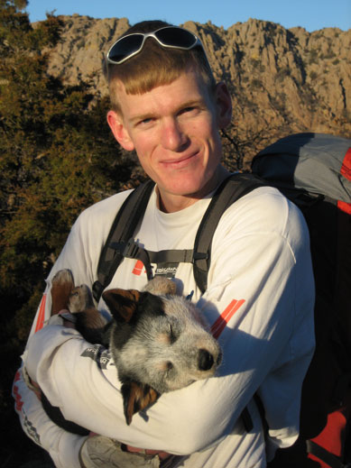 |

At long last - the wedding! Luc & Cassy had so looked forward to being married and the day finally arrived on June 10, 2006. We were blessed to attend the wedding and spend a great few days in California as well. Luc got Eric on a multi-pitch route at Lover's Leap which Eric enjoyed very much. (After it was over!)
Luc was getting more and more interested in photography about this time.
He was always kind to share pictures with me from our outings. They
grew
to professional quality in a very short time.
This is a shot during a session when he was trying to teach me about
F-stops
and things. He continued to send me tutorials via e-mail even as
recently as
December 2012, but I'm a slow learner. I now want to learn in earnest
though,
if for no other reason than to honor my patient and determined friend.
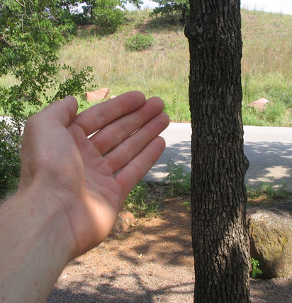
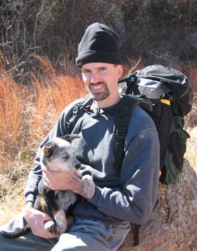
They took so many weekend rock climbing trips
that I decided to throw a BUNCH of pictures all
onto this one climbing page.
Well, one trip it was forgotten at home. But our fearless climbers do not give up easily! Eric used a CD case as a spatula and they all used Tae Kwon Do breaking boards for plates. Fun times.
one of those 100+ degree days!
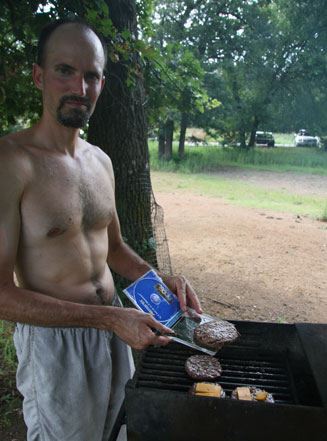
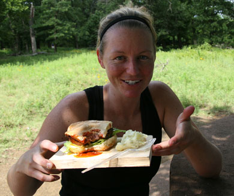
.jpg)
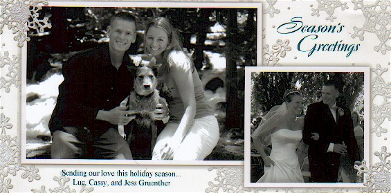
Each year I post the pictures that I receive in Christmas cards on my
site,
so this includes Luc & Cassy's card. These were the pictures
from Christmas 2006.
That sentiment carried through all the years they were together. I never once saw them take each other for granted. They were always sincerely grateful for each day they spent together.
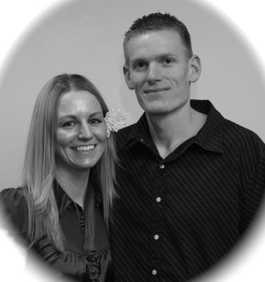
In February of 2007 there was another HCR trip in which Luc, Cassy, Eric, and Chance all attended - with Jess, of course! Luc shared these two pictures of that trip with me.
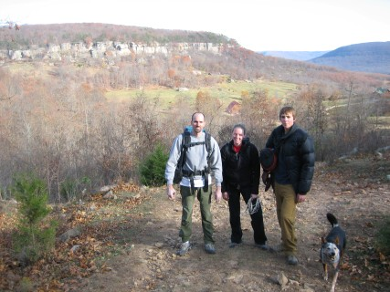
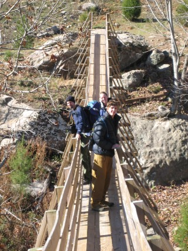
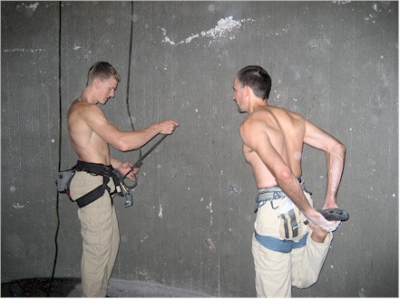
During a rainy period when Cassy also happened to be out of town, we were blessed to entertain Luc & Jess one weekend in June 2007 at our house in Edmond.
In September 2007, we spent a very fun weekend with Luc, Cassy, Steve, and Helen. Perfect weather, perfect friends, perfect dog - what a great time we had. Luc was getting very serious about photography at this point and already displayed his great eye for the perfect shot.
.jpg)
Spouse Taxi Day
In October 2007, I posted some great shots
of Luc & Cassy at Spouse Taxi Day,
even though I wasn't there to take the pictures.
Here is a great commentary from Luc about this day:
Cassy
reports that her favorite part of the taxi day was getting to drive the
jet. She taxied a bit like a drunkard, but did very well for her
first time. She made all the radio calls like an expert, although
she had trouble pressing the mic button and steering the jet at the same
time. It's tough to say, "Sheppard Ground, Ally 44, taxi with
bravo" while pushing the mic button and also pushing the nosewheel
steering button and steering the jet with the rudder pedals. As her
instructor, I gave her an "Excellent" grade overall. I
normally grade very objectively, but her good looks and excellent radio
voice may have influenced my evaluation a little bit.

This is from a note from Luc that I received in October 2007.
(Before he read the China Study and gave up on meat!)
Shawnna,
Luc
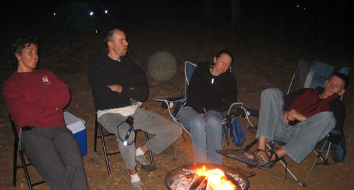
In November, some of Eric's Tae Kwon Do friends joined us with Luc & Cassy for climbing and camping in the Wichitas. We can thank Eric Harris for this shot - it captures the fact that I was having fun and everyone else was dozing off. Wonder if I'd been telling stories from my childhood?
.jpg)
Here are the Christmas card pictures from 2007.
|
Audio Book Joint Venture Early in 2007, I heard about a contest you could enter by sending in a picture and story about your best road trip. I told Luc he should enter. He did - and won! I'm very sad I don't have a copy of the picture or story, although I remember him saying that he didn't think it was all that good. Anyway, he won $500 worth of audio books. He kindly let me choose some of them, then we started an Audio Book Joint Venture together. He listened to the books, then I listened to the books, then I sold them on Amazon and we split the profit. We figured any money was a bonus since we had both enjoyed the free books. I have this note from Luc after one of my reports on our wealth building venture: What's all this talk about not doing well?!
$8.70 profit is smokin'. It's partly my fault that sales are down because I
have a bunch of unopened audio books stored away. I've got to get listening.
I'm
sure you can't believe I would leave unopened books to get dusty in the
closet. It would be like you getting a new rack of cams and hanging them on
the wall with the tags still attached. That's
just wrong. Lu
|
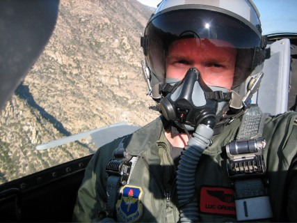
Luc had been out of town a lot in January 2008, he was in Test Pilot School at Edwards AFB in southern CA - getting his first taste of flying F-16s.
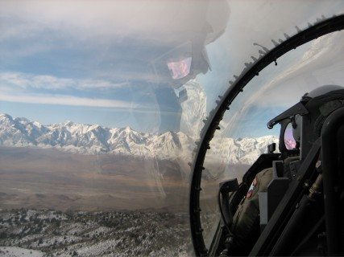
Luc sent some pictures (including these two) and a great story of his
adventures to some people. He really had a great time there.
After he returned
they got great climbing weather in the middle of the week one day.
They just decided to take
off work to spend the day climbing. This just happened to be Valentine's
Day - how romantic.
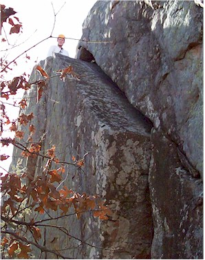
.jpg)
Two days later, we celebrated Valentine's Day in a more traditional way. We did a couple's weekend to Quartz Mountain resort. The plan was for the gang to climb while I did "Shawnna things" (which is pretty much anything but climbing.) The weather didn't cooperate, but luckily we had great company so we didn't mind.
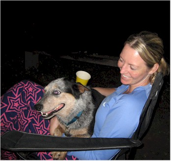
May 2008 saw us going to Horseshoe
Canyon Ranch again,
this time with the Feketes as well.
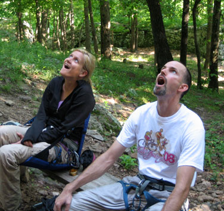
Helen & Eric, watching the HCR climbers in total awe.

Cassy also helped us with our niece's school project, "Flat
Stanley."
She helped Kaitlyn's Stanley be the only one who went rock climbing.
I take the opposite approach that you do when sharing pictures. You choose the best, most beautiful highlights that give a full impression of the trip without overwhelming the viewer. I am passionate about details and feel I�ve ripped off my viewer if I withhold even a single shot! J
.jpg)
In October 2008 we invited our friend Catherine and her daughter Natalie to the Wichitas with us where we joined the Gruenthers and Feketes. I can't remember why we didn't camp that night, but we enjoyed the company around the campfire nonetheless. You can see here how Luc taught Natalie how to build a fire. He was always patient and encouraging like that with everyone. A born leader.
I also posted a picture of Luc climbing in Yosemite National park. I wasn't there for it, but I was so impressed with him I had to put it on my site.

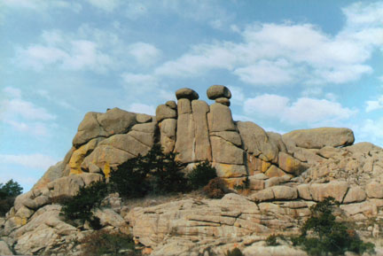 Luc was one of the most persuasive people I've ever met. Not in a pushy way either, it was almost magic how you suddenly found yourself agreeing with him, having no idea how you got to that point. I've mentioned how Eric climbed with Luc year-round, during our 100+ degree summers and the coldest winter weekends. I should admit that about 60% of the time, Eric did not want to go out in those extreme weather conditions. This is how a typical week would go: ERIC: "It's supposed to be 104 this weekend! No one in his right mind would climb in that. I'm calling Luc and to tell him that I'm not going this weekend." Eric makes a phone call, hangs up, returns. SHAWNNA: "What time are you meeting him on Saturday?" ERIC: "9:00" |

As persuasive as he was, the one thing Luc was never able to talk Eric into doing was "24 Hours of Horseshoe Hell." This is a rock climbing competition at HCR which spans a continuous 24-hour period. You must climb at least one route per hour to be in the game. Luc won the intermediate division in 2007 and Cassy won the women's beginner division in 2008. We were fortunate enough to host them at our house on the way to the competition in October 2008.
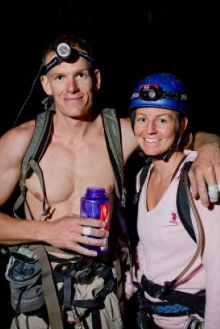
I cut out just one shot from the 2008 Gruenther Christmas card, but I'm sure the whole thing was very creative and beautiful - they always were.
.jpg)
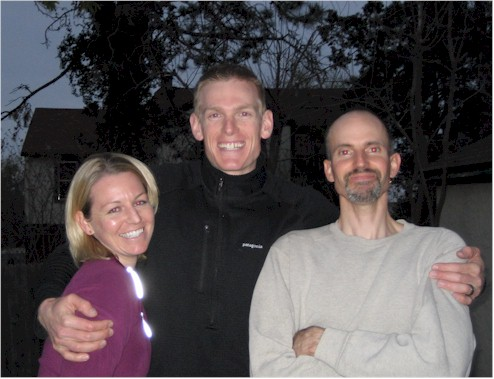
In mid-March, 2009, we hosted the Gruenthers in our home for their last weekend in the area before they moved to Ohio. We were able to celebrate another birthday with Cassy, and (since there were no rocks handy), the boys played around with climbing a tree. We had a truly great time with them and were briefly joined by the Feketes. The Gruenthers & Feketes were headed for one last outing to Horseshoe Canyon Ranch. We couldn't join them because we were about to go to Israel. They had a great time though, as you always did when Luc was around.

In March 2009, Eric and I went with a group from our church to Israel. Shortly before this, Luc & Cassy had taught us how to play Farkle. This came in very handy on our Israel trip as we enjoyed some rousing games. Here is an e-mail exchange between Eric & Luc after our return:
ERIC: I can't remember if I told you about this or not but we made a significant improvement to your game of Farkle. On the third farkle (when you loose points) your opponents create a capital F pointed toward the farkle-e hence magnifying the disgrace and degradation experienced by the farkle-e. (See attachment). Note that it doesn't matter if you are creating a capital F or the mirror image of the capital F. What is important is that both arms are pointing to the farkle-e with derision. Make sure that you say faaaarkle as you point.
LUC: Excellent Farkle rule addendum! Wow, I love it and I never could have come up with that on my own. It will be forever written into the rule book.
That is classic Luc - always supportive of his friends in even the smallest things.
| In June 2009, Luc talked to us about something his friend Dave
was setting up. It was a web site for "Mini Sagas" which are
stories that are exactly 50 words long. No more, no less. Luc sent two
that he had written:
The bridge trembles. My legs tremble. The 486 feet of air above the river scares me. "3, 2, 1, see ya!" I leap. Two seconds later my canopy blasts away the silence. I steer to shore and land on a carpet of grass. My first BASE jump is a success. "I've done something
very, very bad," he said. I followed him to the bathroom, which was
flooded with stinky, foul water. The best solution was to stand on the
toilet seat (to keep his feet dry) and plunge like a maniac. It worked.
Teen slumber parties can be very embarrassing.
|
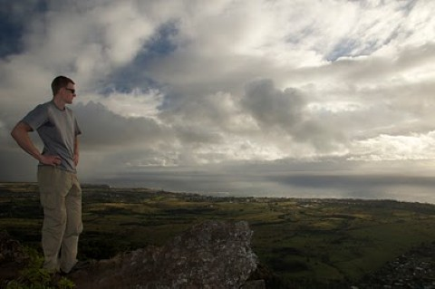 |
Comment from Steve: "Who else would be taking a picture of their own house burning down?"
Comment from Eric: "Classic Gruenther style. My main man doesn't do anything halfway. When he burns down his pad, it is a 4 alarm baby. "
My favorite comment from Luc's blog: "Cassy was bummed because the one outfit she owns at this point, 'Isn't even that cute.'"
When they moved away from Texas, I had made a photo memory book for them. I ordered a new copy for them after the fire and this is part of Luc's response:
Eric and
Shawnna,
We were psyched to get one
of our 68,865 possessions back today! "Life and Times with the
Gruenthers" now sits on our 1-day-old coffee table and it is currently my
absolute favorite coffee table book I own.
--Luc

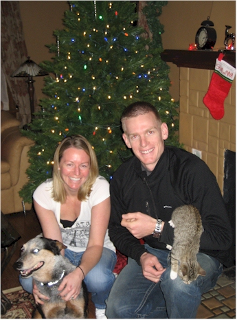
Luc, the good military man that he was, could not stand to hear Eric's version of the phonetic alphabet, "Cat-Apple-Sam-Apple-Zebra-Zebra-Apple." I think it was the Zebra that really got to him. And of course, this only increased Eric's amusement.
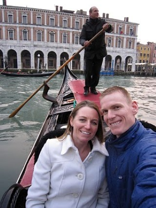
In March 2010, the Gruenthers moved to Italy. And not just any part of Italy, but the Northern part where the best rock climbing is located. Here they are one one of their many trips to Venice.
The Gruenthers were very, very good to always invite us to visit them in Italy, and to see them whenever they came back to the States. There was always something going on, some reason why we felt we couldn't go visit at the time.
He was so good about staying in touch by e-mail that sometimes you felt like you'd seen him only last week. I don't know how he had the time to be so well read, to learn photography, and to go on so many hiking/climbing adventures. I say this because I know he must have kept up with scores of other friends the same way he always kept in touch with us. He approached friendship with the same spirit of excellence that he approached everything else.
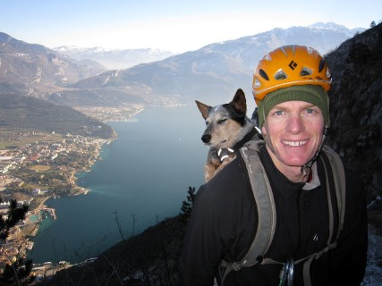
.jpg)
For some reason, I didn't scan the Christmas card pictures from 2010, but I
do have 2011 here.
This showed a particularly adventurous year for our friends.
Nice
update! I had fun going through the photos and reading your awesome
captions. The photo that made me laugh the most is the one of Eric in his
fancy white V neck T-shirt on at the New Year's meal with guests. Classic.
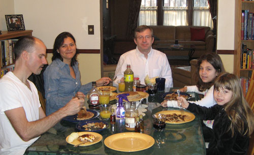
Cassy had declared prunes a no-fly-zone because of Luc's body's unpleasant reaction to them. We had great fun teasing him about this.
Romel, you raised that boy very well. He actually felt that the electronic thank you didn't even count. He was a strong believer that paper thank you cards are how you show that you really mean it. Luc and Cassy sent us a 'real' thank you card for even the smallest thing we ever did.

Luc sent me this in June of 2011. He could find beauty anywhere. This is what I sent to him after getting this picture:
Now see, THAT�s what makes a great photographer. When you
start with something that isn�t really beautiful but find beauty in it.
That�s a great shot Luc, looks like it would be some great climbing if you
didn�t have to get blown up to get to it.
Restrepo
shows so much: how frustrating this war is in terms of it being different
than anything we have ever done, how the Army is trying to win hearts and
minds, and how much sacrifice our guys on the ground are making. That's
my favorite part...the film shows exactly why we (F-16s) are flying
everyday - to give the dudes on the ground bombs when they need them or
just peace of mind that we're circling overhead while they're patrolling a
high-threat area.
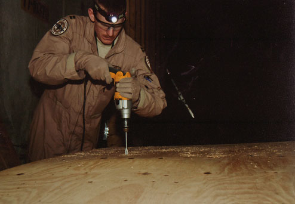
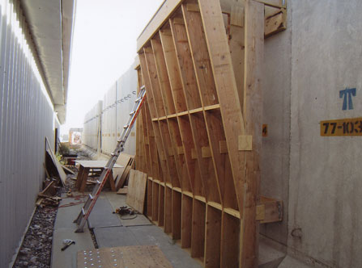
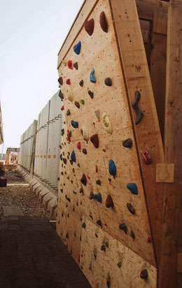
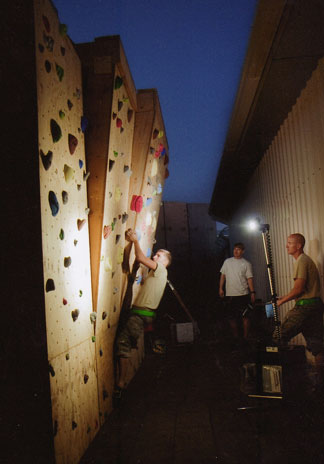
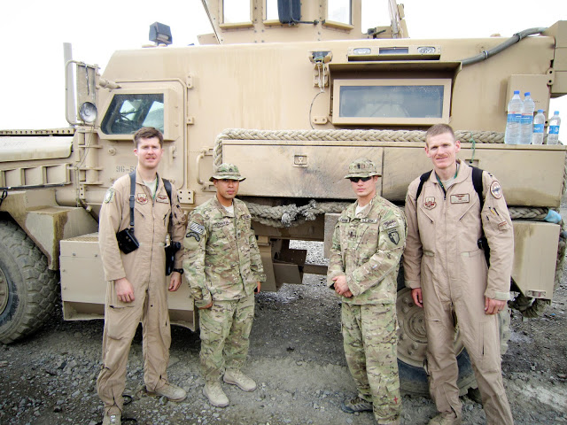
Flag over Afghanistan
Luc did a great thing for our country, for these two soldiers pictured
above, and for us - all at once.
This is special so I put it on its own
page.
Now we get to the one that breaks my heart. I thought the 2012
Christmas card was the
best yet because of the clever shot with Serene's empty shoes. I can't look at it anymore.
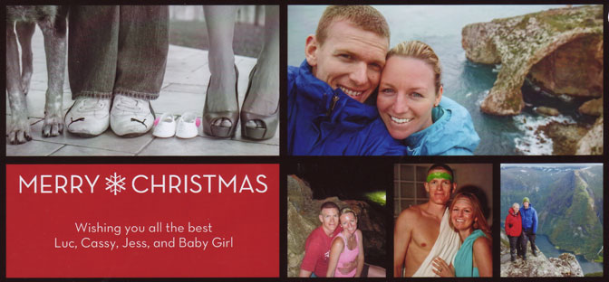
Two agonizing days of hitting "refresh" on the Google news feed went by before we heard the awful news that our hope of his survival was not to be. I have never experienced grief like this before and cannot imagine how those even closer to him have managed. I have captured three of the news articles from that time here.
celebration of life lived well.
Live Like Luc - https://www.facebook.com/home.php#!/LiveLikeLuc
This contains a memory wall for people to write something about Luc.
Video of the Memorial Service in Italy: http://www.youtube.com/watch?v=wWz_frvN79s
This was posted on Live Like Luc from his high school yearbook. It
remained true throughout his whole life.
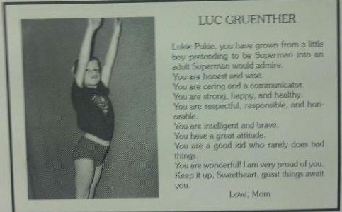
"He lived a live full of adventure and full of love," his wife said. "If he were here, he would challenge each and every one of you to go climb that mountain you've been waiting to climb, he would tell you to plan that trip you haven't planned, he would tell you to call that friend you've been thinking about, and he would tell you to be sure to tell your loved ones you love them every day.
"So I challenge you now, for him, and in his memory," she concluded.
"As per usual, life is good," - Maj. Lucas "Gaza" Gruenther
Mom & baby are well. Thank you Lord for sweet Serene!!
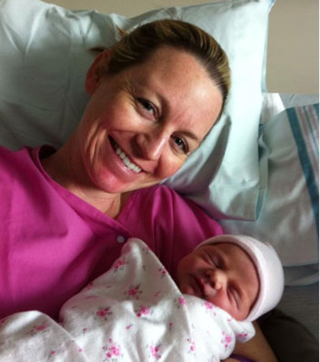
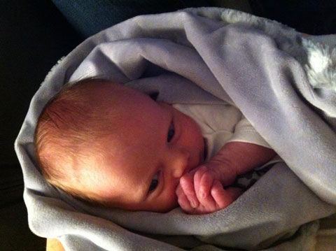
from January 2014.